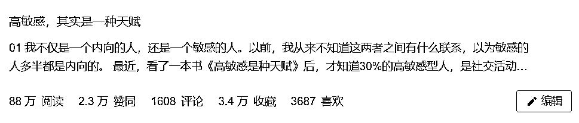
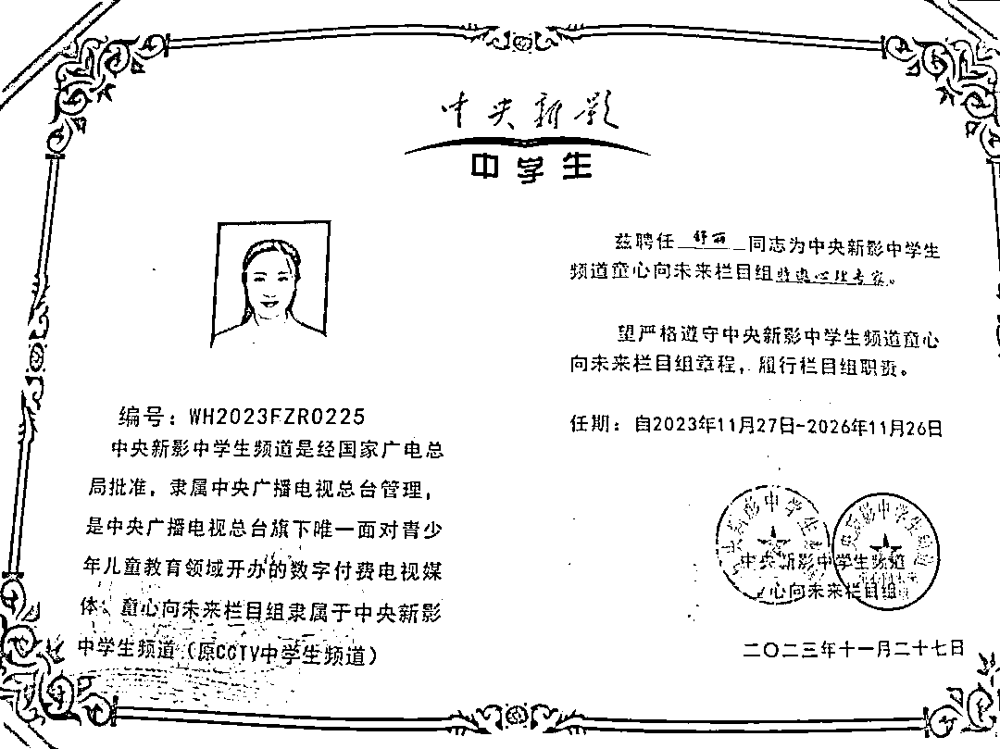

来源：https://bd5shvz1qn.feishu.cn/docx/YTiHdPjjPodk0JxZd48cFkxDnwf
大家好，我是舒丽，一个有着3岁孩子的90后妈妈，一个心理作家，心理咨询师，还是一个心理学创业者。我有着多重身份角色，每一个角色都是一种生命体验。
9年前，2014年，我24岁，从一所二本院校毕业，成为了一个财务工作者。那时的我，迷茫、焦虑、自卑、贫穷、内耗、做着自己不喜欢的事，每天都活得不快乐。9年后，现在的我32岁，和我的老公成立了丽明教育，有着8人的团队，共同经营着一份热爱的事业。有上百个学生与我同行，走在活出自己的路上。
我是一个极度热爱自由的INFP()，如今真正实现了时间自由、地点自由和精神自由，每天都在希望中醒来，在喜悦中入睡。
做着自己天命的事业，每天都不知疲倦，不断绽放着生命的热情。
这9年间，我有过2次人生重大选择，也就是转行2次，都实现了成功转行。在这样的理想成绩背后，藏着我的8大成事心法。
今天第一次公开分享出来，我相信我可以做到的，你也一定可以。只要你足够想要实现你内心深处的渴望，宇宙已经准备好了，一切让你成功和喜悦的资源。你要相信，每个人都是本自具足的，你可以创造你想要的人生。
这种专注是刻在骨子里的，只要是我真正想做的事，我会非常专注地去完成它。大学期间，每次考前复习，我可以整天坐在图书馆复习，只为了达成考试目标。所以，我每次考试都排名前茅，拿国家励志奖学金。这是我对自己的高要求，更是一种自我负责。
毕业后，虽然我做着不喜欢的财务工作，但在工作时，我依旧是高效专注地完成所有工作。
领导们都对我非常放心，交给我的事，从来不需要操心，因为我总在第一时间完成。5年前，我开始一边工作，一边写作，更是把专注的精神发挥到了极致。每天下班回家，我从七点开始坐在书桌前，经常写到凌晨，几乎每天都会完成一篇文章。最多的一个月，我写了30篇文章，上稿了25篇文章，发表在各大平台，比如有书、才储、潘幸知、樊登读书等等。也靠稿费收入，实现了月入过万。
印象很深刻的几次约稿经历，有一次喜马拉雅平台约我写一篇人物热点稿，我在2小时内完成，第一时间发布。
还有一次，王耳朵先生跟我约一篇热点稿，我也是在3小时高度专注完成，拿到了很好的数据。潘幸知约我写过很多篇热点稿，我都是在3-4小时完成，收获了多篇10W+。能够在短时间写出高质量的热点文，没有足够的专注，是不可能完成的。我能够排除干扰，不怕外界喧嚣，能够静下心来，在键盘上敲打出一个个文字。我能够把自己写好的文章阅读10遍以上，校对错别字，增添删减，修补字句，不厌其烦。我能够连续4个小时，认真去读完一本书，并去写读书笔记，深入思考。因为我的专注，我每年阅读30多本书，写出50多万字。
今年，我开始转战心理赛道，这种专注让我很快拿到了结果。我可以一天连续做5个咨询个案，可以连续4小时给书写疗愈营学员做集体疗愈个案，依然保持高度专注的状态。所以，我才能在5个月内，就积累了200多个个案。书写疗愈营学员感受到我的真诚专注，收获很大，对我非常认可。60%学员升级了合伙人，终身与我同行。在给合伙人们上课时，我可以专注讲2个小时，不知疲倦，她们都被我的专注高能量的状态感染，每天都期待上课。
当你无比专注地去做某件事时，效果就会显而易见，那些你想要的，你渴望的就会与你不期而遇。
当你无比专注地去付出，去投入时，不经意间，你会邂逅那个更好的自己。专注，是你在认真地做一件事，并一心一意把它做好。
专注，是每个人都要经历的修行。专注能释放巨大能量，促使一个人将一件事做到极致，创造奇迹。在专注稀缺的时代里，保持专注，你就会成为稀缺，世界都会为你让路。
这个世界，从来不缺三分钟热度的人，但只有全力以赴，才能让理想照进现实。就拿写作这件事来说，我见过太多刚开始信心满满、最后却中途放弃的人。那些刚开始和我一起写作的人，80%都已经放弃了，其中有一小部分还在写写停停。为什么会有这么大的差距？并不是说我有更高的写作天赋。而是因为我一直在持续坚持。
“在这9年里，我从未停止过写作。
别人午休时，我在写作。别人聚餐时，我在写作。别人在闲聊时，我还在写作。坐在书桌前，我用电脑写；出门办事时，我抱着手机写。清醒时，脑子无时无刻在构思；睡觉时，大脑还在一刻不停地写稿。我曾为了赶热点，在公交车上写作。创造了一个热点，从三个角度切入，写出三篇成稿，发布在三个大号的成绩。”
两代一姐罕见同台，董卿一番话，倪萍瞬间泪奔……（有书）倪萍董卿罕见同台：都说岁月不饶人，而她们也未曾饶过岁（国学精粹与生活艺术）两代央视一姐罕见同台，董卿一句话令倪萍瞬间泪崩...（喜马拉雅）我也曾看了一部电视剧《都挺好()》，从不同角度写了4篇文章，发在三个不同的大平台。《都挺好》姚晨暴露的4个职场真相（插座学院）姚晨《都挺好》：“原生家庭欠你的，你可以自己赢回来”（婚姻与家庭杂志）从“海藻”到“朱丽”， 从无戏可拍到事业翻红，34岁的她都挺好！（婚姻与家庭杂志）ENTJ女王姚晨（才储）
“2019年春节时，大家都在过节，我在写作。那一个月，我上稿了20多篇文章，实现了月入过万。
与财务工作常有内耗不同，在写作时，我常常进入忘我的心流状态。当文章发表，看到读者被我的文字鼓舞，内心的快乐再次翻倍。大量书写，也让我常有灵感迸发的瞬间。我读完《高敏感是种天赋》之后，大受震撼，第二天中午午休时灵感突发，趴在仓库一口气写下长文《高敏感，其实是一种天赋》。”
“由于这篇文章并不符合当下新媒体文的表达风格，我把它发布在了自己的公众号上。没想到十几个公众号找我申请开白，这其中还有壹心理平台的矩阵号。同样是这篇文章，我把它发布在知乎上，成为大爆款，至今阅读量已经突破88万，收藏3.4万，评论1600多。”

这篇文章还让我被编辑老师看见，实现了我的出书梦。

“事实证明，只要是好的内容一定会引发传播。我的第一篇大爆文《为什么越内向的人越厉害》同样是自我表达，那时我还刚进新媒体领域摸索，写下这篇文章全凭一时兴起，但一经发表，就引起刷屏级转发，被全网300多个大平台转载，单篇文章阅读量过亿。出稿速度快，质量稳定，我写的稿件几乎不需要修改，这让我成了编辑手里的香饽饽。我接到的约稿不断，成了【喜马拉雅】、【有书】【读者】、【樊登读书】、【潘幸知】、【才储】等知名平台的签约作者，文章被人民日报、新华社、民生周刊等官媒转载。”写作，是一件付出就有回报的事，但要看你究竟能为它付出多久？十年如一日，写作早已成为了我日常生活的习惯，就像吃饭、睡觉一样自然而然。不仅仅是写作这件事，我坚持了14年，我与心理学的缘分也同样是14年，所以，我的爆文都是与心理学有关。大量的输出，一定离不开输入。

我从大学开始阅读心理学类书籍，整个大学都泡在图书馆，阅读过上百本心理学类书籍。
这给我打下了扎实的心理学基础和沉淀。从二十岁开始接触心理学，到用心理学分析问题，写心理学文章，出心理学书籍，然后做心理咨询，开发心理学相关课程。这一路走来，我还真是和心理学死磕上了，仿佛它就是我生命里不可缺少的一部分，我的存在就是为了探索它而来。这种与生俱来的使命感越来越强烈，促使我不断学习成长扎根，再通过公开表达的方式，去释放它的魅力。每个人成长路上，都会面临很多诱惑，走着走着，或许就忘了初心，抛弃了梦想。毕竟梦想的实现之路，一定会布满荆棘，在成为自己的路上，一定会经历很多非议和不理解，甚至需要放弃很多。
所以，成功的路上并不拥挤，因为坚持的人并不多。只有坚持长期主义意识，你才能收获梦想的果实。做成任何事，都需要长时间的积累和投入。耐得住孤独的人，才能等来你想要的一切。
人生不过三万天，一定要取悦自己，过独一无二的人生。我是一个理想主义的INFP，向内探索了14年，一直在追寻自己真正热爱的事。找自己这条路，我从未放弃过。做财务工作5年，我裸辞4次，换了4家公司，不断尝试新的岗位，就是为了追寻自己真正想要的。到最后，我非常确定财务这条路不适合我，及时止损，在2018年走上了自由职业这条路。
只有在充分了解自己的基础上，才能做出最适合自己的选择，选择对了，努力才能事半功倍。我们才能在自己所热爱的事情上，全情投入，活出最好的自己。《她力量》这本书上写到了“内心导师”这个概念。虽然之前从不知道还有这样的概念，但我发现我对于人生的选择，一直都在被内心导师的声音引导着。内心导师帮助我描绘出我未来想要成为的样子，一种视觉化的场景：我看到了一个认真伏案写作的中年女人，浸泡在一堆书中，过着自由而又简约的生活，一副很孤独却满眼温柔的样子，看上去内心安静而丰富。我当下有一种想要流泪的冲动，好像看清了内心最真实的深度渴望，那是我梦想中的样子。
如果不是我一直向内探索，或许我也不会遇见自己的内心导师，总是给我指明正确的方向，让我朝着自己期待的样子成长。你可以把内心导师看作自己的一部分，她更完整更明确重点，她是你对未来自己的愿景，你将变得更完整更成熟，你可以把她当做你精神和灵魂的声音。不断去尝试去行动，这样我们才能和美好的一切不期而遇。进窄门，走远路，见微光。在这个浮躁快节奏的时代，做难且正确的事，真的很不容易。
因为你要抵御很多外在诱惑，也会面临很多质疑和不确定性，内心也会有很多恐惧感。因为你害怕，自己付出了很多，到头来却什么也没做成，还失去了很多。毕竟难而正确的事，是需要漫长的时间去验证、去探索、去实现的。大多数人等不起，也没有这个定力和耐心。会选择那条看起来容易走的捷径。5年前，我选择裸辞写作的那一刻，就是在选择一件难而正确的事。我明明好不容易进入了一家世界500强企业，成为财务主管，公司离家2公里，每天不用加班。工作也清闲。仿佛实现了自己当初期待的理想工作。但当我开始公开写作后，生命的那股热情彻底被点燃，我知道写作才是我这辈子要去做的事。遇到了内心真正热爱的事，又怎能不抓住机会改变现状？
要想成为一个专业写作者，从财务转型为作家，肯定是要付出很多时间和精力的。我的第一个孩子就在我最开始拼命写作时胎停了。
三年时间，我写出了200多篇10w+爆文，名字出现在各大平台，登上官媒，成为爆文作者。但也遇到了瓶颈期，我不想再为其他平台写作了，我想为自己而写。我又选择了一件难且正确的事。我停止了投稿之路，开始在各个自媒体平台写，直到写出自己的第一本书。
同样，做写作导师4年了，我手把手带领1000+写作者走上写作变现之路，培养了很多爆文作者。
也带了一年写作IP私教，帮助很多人实现了弯道超车。
很多人都找到了自己的定位，拿到属于她们的结果。
有人拿到了公费出书机会，写出了人生的第一本书，完成了出书梦；
有人成了IP故事导师，帮助创始人梳理人生故事，助力放大品牌影响力；
有人成了作协会员，作品登上百万级平台樊登读书，约稿不断，有了稳定的副业收入；
有人成了文案导师，开设爆款文案课，开始尝试知识变现的旅程；
有人成了读书营领读，成为了樊登读书常驻作者，还用一篇书评稿横扫各大平台；
有人拿下了给创始人打造IP的全年文案项目，预计服务费在3w以上；
有人在我的指导下，从0开始做小红书，用3个月的时间做到近万粉；
还有人仅靠小红书图文就接广告接到手软，月变现稳定在4位数以上
尽管我做出了这么多成绩。
但今年却选择转型到心理赛道，又要去做一件难且正确的事，只因为听到了使命的召唤。它是当下，我最想做的事。这一路都走得很艰难，却很正确，因为在一步步实现我内心期待的样子，也听从了内心最真实的声音。那些没人敢走的泥泞之路，行走虽然艰苦，却通向难以想象的光明灿烂的未来。
只有选择更难走的路，做更难的事情，才更有可能走得远，才更有可能看到更好的风光。
笃定目标，聚焦做好当下热爱的事，每一天都会能量满满。很多学员时不时跟我说，自己很焦虑，很迷茫，动力不足。其实，是你没想明白你要什么，对目标不够笃定，对要做的事缺少使命感和强大愿力，对自己也不够自信。我无论处在什么人生阶段，哪怕一无所有，只要我想明白了我要干什么，就能一往无前，拼尽全力实现心中的可能性。想要进入一个新赛道新行业，真没那么难，只要你有持续学习的能力和行动力，就能很快走上正轨，实现转型。人生不过是一场场体验，放松心态，笃定前行就好了。
可以说，每一次选择，都会有从0-1开始的过程，也会有一段积累沉淀时期，也会面临很多不确定性和未知的风险。
但我做决定，只为自己负责，不会被任何人的声音影响，因为外面没有别人，只有你自己。只有你自己知道自己是否开心，是否有热情，是否有内在动力。承担选择结果的，也只有你自己。你做出选择后，所有的一切都只有你自己在经历，在体验，在成长。旁人只不过是个看客，就算是父母也是一样。
不要因为他人的声音影响你做选择，你的人生只能由你自己定义，你是人生的主角。学会课题分离，分清自己的事和他人的事，你才能主宰自己的人生。做真正热爱的事，你才能绽放生命的无限热情，拥有满满的能量。我的人类图显示，我是一个能量非常充沛的人，超高的能量非常容易吸引人靠近。我非常喜欢新鲜事物，创造力非常强，这注定我会不断去折腾，去探索人生的更多可能。
转型心理赛道6个月，我的营收就突破了90w，吸引来100多个学员与我同行，加入了“丽行者”。与舒丽同行，在这个时代逆流而上，坚定地做自己。财富是能量和认知的变现，当你的内在能量足了，财富自然奔你而来。
白岩松说过：
“阅读带你面对内心，面对人性，面对生命。在你行走艰难之时，为无门之处开门，让无光之处有光。”喜欢一些作者也不是偶然的，而是一种必然。因为他们的书里，必定蕴藏着你所期待的自己，能够帮助你更好地塑造自己，完善自己。通过阅读，你的认知在提升，你的眼界变得更开阔，你的人生体验也在不断丰富。
有时候，一本书或者一套思想体系，会改变一个人的命运。阅读，能够让你始终对任何人和事，保持一颗敬畏心，不会人云亦云，也不会随波逐流。你会有自己的判断和思考，保持独立思考的能力，可以让你在任何境遇下，都能清醒地面对自己和这个世界。你会建立起稳定的价值评价体系，不会轻易被外界的声音影响，保持自己的节奏稳步前进。我每天都有读书的习惯，无论再忙，都会保持半小时的阅读。读好书，是在和高人对话，会收获很多高维智慧。
除了读好书，还要真正地付费向高人学习。会让你一年顶十年成长。
从2022年开始，我付费10万进入各类知识IP的圈子，比如菁凌私董会()、不晚轻创合伙人、玩赚合伙人、书香学舍私董会等等，熟知了很多商业模式和玩法。今年，我又付费10w学习了各种疗愈技术和教练技术，还花了19800学习了心理咨询式成交之道。很多人都知道，我还付费12万成为了伍老师的私教学员，也就是《1000个铁粉》作者伍越歌老师。
当在他的课堂上听到，做个人IP，就是要活出真我，真实，是最好的人设。这跟我的价值观也太相似了吧。当我告诉他，我想从写作IP转做心理IP，因为我内心深处最想传播的是心理学，我也想通过心理学助人。而写作是我对外公开表达的渠道，是传播心理学()的手段，也是我与这个世界链接的方式。他说，我很适合，我的写作之所以很好，文字很入心，也是因为我的心理学功底深厚，洞察力和共情力强，并不是我写作技巧多厉害。我不应该以写作变现，而是把写作当成表达工具，做更大的事业。
正是心理学成就了我的写作，心理学是根，写作是技能，是心理IP的放大器。他说，做个人IP要有增量思维，而不是存量思维，基于你未来想活成什么样，活出你的天命，就去做什么。
遇到一个对的老师，真的会唤醒你的生命潜能，点燃你的灵魂，让你看到自己的无限可能性。如果你和一个老师价值观很同频，他又能看见你，激发你，给你很多能量，就一定要深度链接他，他一定是你生命里的贵人，是来成就你的。你想要成为什么样的人，就去靠近什么样的人。每个人都会有自己的能量场，现在选择老师，其实更多的是看中她所在的场域，同频相似才能相吸。毕竟和谁在一起，真的很重要。和对的老师在一起，你会被激发出对生命的热情，会发现人生的美好，继而找到自己的人生使命，不断地努力前行。
很多小伙伴选择加入丽行者，其实就是看中这样一个正心正念正能量的场域。
选择老师，不是一定要选择最好的，但一定要选择适合你的。有些老师看起来很好，但如果和你不同频，能量不契合，可能并不能真正帮助你。相信自己的直觉，遇见适合自己的老师，一定要仅仅追随。
我的人生使命就是：用自己的行为作为榜样，全然地投入生活，以真诚和真实的生命状态影响周围人，吸引同频者。我改变命运的时刻，就是从公开表达开始的。
在公开表达前，我是一个非常孤独的灵魂，感觉周围没什么人可以真正理解我的精神世界，有着丰富的内心，却无法与人交心。
大部分时间，我都是独处，和自己在一起，很享受这种孤独的状态，也算是自得其乐。利用独处的时间去提升自己，有了很多积累和沉淀。我的表达欲一直很旺盛，因为我的内在生命力很旺盛。虽然之前还没有公开表达，我都是一直有写日记、发朋友圈的习惯。从2014年开始有微信，我就开始每天发朋友圈表达自己，我的朋友们都知道我是一个文艺女青年，喜欢读书分享。但周围人其实是不太能理解这点的，甚至有人说我装、假清高、不接地气。似乎按照世俗标准那套活法，才算是接地气。
我不做任何解释，也从未妥协于世俗，依旧我行我素，特立独行，有情绪流动时，就及时记录下来，我经常一口气可以写几千字的文章。也正因为我一直有表达习惯，当我开始公开表达时，轻而易举就能写出一篇完整的文章，还能拥有很多素材，都来自于我的日积月累。当我把自己过往的经历、内在的智慧和想法表达出来时，才发现这个世界上居然有这么多同类，我经常被很多读者留言感动得热泪盈眶。公开表达，让我的生命力极致地绽放出来，让我生命能量越来越高。
我爱死了创作，爱死了公开表达。我要为女性觉醒发声，为内向高敏感群体发声，这是我的表达使命。
所以，我的爆文《为什么越内向的人越厉害》《高敏感，是一种天赋》成为公众号、知乎、小红书的现象级爆文和短视频，让内向高敏感群体得到了深深的共鸣，治愈了他们。
同时，因为我给这些群体带去了价值，她们也会选择向我靠近，付费向我学习。因为我给了她们希望。我可以做到的，她们也可以的。爆文的底层逻辑并不是有多高深的表达技巧，而是真诚极致的表达，看见人性的普遍痛点，在文字里体现共情力。活出真我，公开表达，自然会有很多同频人靠近你，财富也会奔你而来！
一旦一个人内心真的想做一件事，全宇宙都会帮助他。一直以来，我是一个很听从直觉的人，潜意识的指引，会帮我带到我真正想到达的地方。当我在发愿做好这个终身事业时，所有资源都奔我而来。我真正活出了心想事成。
在我发售合伙人期间，我在新华书店分享时认识的朋友，来找我合作证书项目。我荣获中央新影中学生频道【原CCTV中学生频道】童心向未来栏目组特邀心理专家证书、中国管理科学研究院客座教授证书和教育部电教办颁发的高级心理咨询导师专业证书。

所有报名合伙人项目的学员，都能获得教育部电教办颁发“高级心理疗愈师”的证书。好几个合伙人都说，要是早点遇见我就好了，她们就早点活出自己。自从走上心理赛道，我从未有过的笃定和能量，好像十几年的自我探索，就为了此刻。
从未有过的活出天命的感觉，这种使命感每天都在我内心深处召唤我。我相信，已经觉醒的我们，一定可以带领更多女性觉醒，这是一份伟大的事业，更是有福报的事业。当我们觉醒以后，有了一套属于自己的处世哲学，就更容易保持内心的安宁和笃定。在2021年10月3日，我写下了自己人生中最遗憾的一件事，就是没能出一本书。
在10月9日，出版社编辑就通过知乎找到了我，给我抛出了写书的橄榄枝。
这一切，就好像冥冥之中自有定数一样，所谓念念不忘，必有回响。张德芬在《遇见未知的自己》里写：当你真心想要一样东西的时候，你身上散发出来的就是那种能量的振动频率，然后全宇宙就会联合起来，帮助你达到你想要的东西。心理学解决了我关于自我，自我和他人以及与社会关系的很多困惑。也让我天马行空的思考有了方向，我会时常问自己：我的人生的意义是什么？要活成什么样的人，这一生的目标和使命是什么？也正是一次次向内探索，倾听内心的声音。让我一路走来，很少能被外界诱惑和影响。
朋友说，你一直以来都好像知道自己要什么，也活得很有底气，什么困难都打不倒你，心特别定。
学员也说，虽然你年纪轻轻，但感觉比我快年过半百的人，活得还通透，很有智慧。可以这样说，阅读心理学，能够引发我的很多深度思考，形成了深度思考的习惯，自然就对很多事和人有自己的看法和见解，形成一套自己的价值评价体系和思维体系。很难有人能影响到我内心世界的稳定。我也更容易专注于我的目标去努力，可以区分我能控制的事和不能控制的事。
不会因为自己不能控制的事着急，把注意力集中在我能控制的事上。去年9月份，我爸被查出来得了肝癌，这个消息如晴天霹雳般震到我。但我很快调整了自己的情绪，知道天灾人祸是我控制不了的事，这个事情既然发生了，我就得想办法去解决。我开始翻阅很多相关资料，买了几本相关书籍研读，还在网上问诊了十几个专家，也去了北京各大医院求医问诊，并加入了好几个病友群。当我充分了解了最前沿的信息，对我爸病情也有了深入了解后，我就知道接下来该如何治疗。尽管内心还是有恐惧，但至少不会茫然无措，有了应对方案。后来，我爸治疗方案很成功，恢复得很不错，目前坚持定期复查，情况稳定。
我把注意力放在了我可以控制的事上，就不会像无头苍蝇一样乱撞，也不会有无谓的情绪消耗，能够快速解决问题。
身边人也时常被我身上的这份镇定自若惊到，而这已经形成了我处事的一种习惯。心理学，总能给我这样的能量。你要相信，一个人内心的安宁和笃定比什么都重要，它能够让你在任何境遇里，都能守住自己，安顿自己。
《反脆弱()上有这样一段话：“任何拘泥于计划、不善变通的事情必然失败。鼓吹规划有助于企业发展简直是胡说八道：事实上，这个世界太随机、太不可预测了，怎么可能基于未来的波动性来制定政策。生存取决于适应性和环境条件的相互作用。
事实上，表面上看上去很稳定的其实很脆弱；而给人以脆弱假象的其实却很强大，甚至具有反脆弱性。”在当下这个快节奏时代，大多数人每天都需要处理很多事，但往往总是发现时间不够用，于是经常会羡慕那些能把时间管理得很好的人。尤其看到某些时间管理达人晒出密密麻麻的日程表，都被惊呆了。似乎谁的日程表做得越详细，时间管理越高效。可事实真是这样吗？
不可否认，一些大佬的时间确实按分来计算管理，因为他们每天需要处理的重要事务很多，只能按照日程表来进行。但大部分普通人，真的需要把时间精确到每天，每小时，每分钟来管理吗？或许很多人也尝试过这样做时间规划，但坚持下来的人可能寥寥无几。因为这样的时间管理系统是脆弱的，一旦哪天有突发事件，或者心情不好只想躺平，那计划就被打乱了。
实际上，你根本管理不了时间，你能管理的只有自己的能量。
大概因为我是一个INFP者吧，天生不喜欢做计划，更别说每天列一个满满的日程表。按照日程表工作生活，我会觉得自己像个工具人。大多数时候，我都比较随性而为。选择做自由职业，也是因为我喜欢这种可以掌控自己节奏的状态。其实，所有时间管理的技术归根究底，就是你有多少有效专注时间。
你能随时切换工作任务，保持高度专注，沉浸做一件事，你的时间管理自然就很强。
所以，虽然我不做具体计划，但每天要做的事，我都能按照自己的节奏顺利完成，作为一个创业者，我把自己的每一天安排得很充实。我一旦全情投入做自己喜欢的事，完全就忘了时间，忘了周围的一切。尤其作为一个创业者，工作和生活早已融为一体。每天都会随时进入工作状态。这可不是我有多自律，对于一个INFP者而言，做自己真正热爱的事，根本不用什么时间管理，什么自律的，就只剩下忘我投入了。
我主要靠忘我而不是自律，忘我是比自律更高的投入，兴趣和激情是比强制约束更强的执行力。
与其去研究那么多时间管理技术和软件，不如先提升自己的生命能量。你的内在能量不足，做再多时间规划，也完成不了。彼得·德鲁克说过：“没有比高效率做无用功，更无用的事情了。”你的生命能量，比什么都重要。
别看我上课可以侃侃而谈，在线下依旧是个社恐，不爱社交，喜欢一个人呆着。也从来不和人闲聊，除了和王先生。
有200多个群，几乎不看群消息，只看我自己的群。太多的消息对我都是消耗。或许在不少朋友眼里，我显得有点冷漠，因为几乎不会主动联系任何人。但有人找我，我还是会很热情地回应。不断给人生做减法，聚焦当下重要的事，都是在保护自己的生命能量。
我需要在世俗生活中，隔离出属于自己的一片净土，这里不被任何人打扰，只有我自己和自己在一起，这是恢复能量的方式。每个人，都需要找到恢复能量的方式。一个人要想成事，能量大于能力，心力大于能力。如果你能量不稳，心力不足，哪怕有能力，也很难拿到结果。
我和我的老公王先生相识于2010年，那时，我才19岁，刚刚上大学。
我们相爱6年后走入婚姻，那时，我25岁。如今，我们的孩子已经3岁多了，我们也都进入而立之年。我们现在既是彼此最好的朋友，最亲的家人，也是最懂彼此的爱人，最佳的婚姻合伙人。
很多朋友都曾羡慕我们，是真正的灵魂伴侣，琴瑟和谐，彼此扶持，共同成长。王先生从大学开始，就在不断发现我的天赋优势。他说我的专注力很强，反应很快，记忆力特别好。这些赞美的话语对我影响特别大，因为我的爱的语言就是赞美的话语。我会觉察到自己，是有这些优势的。工作后，他又经常夸我，工作很高效，喜欢钻研，特别认真负责。转型写作后，他夸我，特别适合自媒体写作，对人性敏感，联想能力强，喜欢思考，行动力也强。
还真是这样，我就会越来越确定，我真的适合写作，还很有天赋。
身边的重要他人对我们的肯定真的太重要了，它会成为我们不断前行的动力。真的很幸运，能够遇见一个如此懂我又肯定我的灵魂伴侣，让我时时刻刻都觉得被看重被珍惜。当你在一段亲密关系中，总是会从对方身上得到能量，让你不断成为更好的自己，这段关系一定是滋养你的。而当你总是从对方身上得到负面评价，被打击被否定，这段关系就会不断消耗你。女性想要拥有自己理想的生活，除了要专注于自己真正热爱的事，把它做到极致。还需要经营好亲密关系，获得另一半的全力支持。
我在任何时候，可以选择做自己喜欢的事，毫无后顾之忧，就是因为有王先生的大力支持。
比如今年，我说了我的旅行办公想法后，王先生马上就和我达成共识，说走就走，去云南旅居了一个月。旅行途中，也都是他在做规划，带娃，操心每个细节。我只需要放松心情去享受旅行，去做自己热爱的事业。我会经常沉浸在自己的世界，忘记周围的一切。他就会帮我应对现实世界种种琐碎的事情。
没有他的支持，我很难如此潇洒地做自己，活成绽放的自己。所以，经营好亲密关系，真的会给一个女人很大的滋养，在任何时候，你都能感受到一个人在全心全意爱着你，呵护着你，无条件支持你。这种深深的陪伴会给我们带来很多能量。时不时就有人来跟我说，我的新书《我想和你好好的》写得真好，非常深刻落地，透露出经营亲密关系的智慧。
哪怕结婚很多年的70后们，看完我这本书，也觉得收获很大，和我赞叹，原来经营亲密关系有这么大的学问。把亲密关系经营得很好的女性，也会少了很多内耗时间，因为关系好了，一切都会很好。
每一个真挚的灵魂都值得被这个世界看见！每个人都可以活出自己的天性，按照自己的意愿过这一生。只要你坚持向内探索，找到自己的天赋使命，此生不必再工作，每天都能活在热爱里。
你不必成为任何人，只需要成为你自己。
你是这个世界上独一无二的存在，你的存在本身，就是最大的价值。让自己发光，而不是等待被照亮。当你找到自己，全世界才能找到你。请无条件地爱你自己，给自己无坚不摧的爱。爱你自己，是你活出自己唯一的路径。愿新的一年，你能成为你自己！